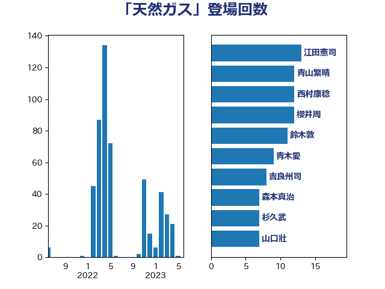

単語「天然ガス」

| 江田憲司 | 立憲民主党 | 13 回 |
| 青山繁晴 | 自由民主党 | 12 回 |
| 西村康稔 | 自由民主党 | 12 回 |
| 櫻井周 | 立憲民主党 | 12 回 |
| 鈴木敦 | 国民民主党 | 11 回 |
| 青木愛 | 立憲民主党 | 9 回 |
| 吉良州司 | 無所属 | 8 回 |
| 森本真治 | 立憲民主党 | 7 回 |
| 杉久武 | 公明党 | 7 回 |
| 山口壯 | 自由民主党 | 7 回 |
| 阿達雅志 | 自由民主党 | 6 回 |
| 萩生田光一 | 自由民主党 | 6 回 |
| 山口晋 | 自由民主党 | 5 回 |
| 鈴木義弘 | 国民民主党 | 4 回 |
| 鈴木俊一 | 自由民主党 | 4 回 |
| 遠藤良太 | 日本維新の会 | 4 回 |
| 村田享子 | 立憲民主党 | 4 回 |
| 山本順三 | 自由民主党 | 4 回 |
| 太田房江 | 自由民主党 | 4 回 |
| 伊東信久 | 日本維新の会 | 4 回 |
| 舩後靖彦 | れいわ新選組 | 3 回 |
| 篠原孝 | 立憲民主党 | 3 回 |
| 笠井亮 | 日本共産党 | 3 回 |
| 石井章 | 日本維新の会 | 3 回 |
| 石井正弘 | 自由民主党 | 3 回 |
| 熊谷裕人 | 立憲民主党 | 3 回 |
| 浅田均 | 日本維新の会 | 3 回 |
| 河野義博 | 公明党 | 3 回 |
| 末松義規 | 立憲民主党 | 3 回 |
| 平山佐知子 | 無所属 | 3 回 |
| 岸田文雄 | 自由民主党 | 3 回 |
| 大塚耕平 | 国民民主党 | 3 回 |
| 北村経夫 | 自由民主党 | 3 回 |
| 馬場伸幸 | 日本維新の会 | 2 回 |
| 野田佳彦 | 立憲民主党 | 2 回 |
| 藤巻健太 | 日本維新の会 | 2 回 |
| 細田健一 | 自由民主党 | 2 回 |
| 竹谷とし子 | 公明党 | 2 回 |
| 竹内譲 | 公明党 | 2 回 |
| 礒崎哲史 | 国民民主党 | 2 回 |
| 石川昭政 | 自由民主党 | 2 回 |
| 石井拓 | 自由民主党 | 2 回 |
| 田村貴昭 | 日本共産党 | 2 回 |
| 猪瀬直樹 | 日本維新の会 | 2 回 |
| 片山大介 | 日本維新の会 | 2 回 |
| 滝波宏文 | 自由民主党 | 2 回 |
| 梅谷守 | 立憲民主党 | 2 回 |
| 林芳正 | 自由民主党 | 2 回 |
| 新妻秀規 | 公明党 | 2 回 |
| 山添拓 | 日本共産党 | 2 回 |
| 山崎誠 | 立憲民主党 | 2 回 |
| 小野泰輔 | 日本維新の会 | 2 回 |
| 小林一大 | 自由民主党 | 2 回 |
| 宮口治子 | 立憲民主党 | 2 回 |
| 大島敦 | 立憲民主党 | 2 回 |
| 塩田博昭 | 公明党 | 2 回 |
| 和田義明 | 自由民主党 | 2 回 |
| 吉田とも代 | 日本維新の会 | 2 回 |
| 古賀之士 | 立憲民主党 | 2 回 |
| ながえ孝子 | 無所属 | 2 回 |
| こやり隆史 | 自由民主党 | 2 回 |
| 高野光二郎 | 自由民主党 | 1 回 |
| 高木かおり | 日本維新の会 | 1 回 |
| 高市早苗 | 自由民主党 | 1 回 |
| 音喜多駿 | 日本維新の会 | 1 回 |
| 長友慎治 | 国民民主党 | 1 回 |
| 角田秀穂 | 公明党 | 1 回 |
| 菅直人 | 立憲民主党 | 1 回 |
| 緑川貴士 | 立憲民主党 | 1 回 |
| 竹詰仁 | 国民民主党 | 1 回 |
| 福島伸享 | 無所属 | 1 回 |
| 福岡資麿 | 自由民主党 | 1 回 |
| 福山哲郎 | 立憲民主党 | 1 回 |
| 神谷宗幣 | 参政党 | 1 回 |
| 神田潤一 | 自由民主党 | 1 回 |
| 石川博崇 | 公明党 | 1 回 |
| 石原正敬 | 自由民主党 | 1 回 |
| 石井浩郎 | 自由民主党 | 1 回 |
| 石井啓一 | 公明党 | 1 回 |
| 田島麻衣子 | 立憲民主党 | 1 回 |
| 玉木雄一郎 | 国民民主党 | 1 回 |
| 漆間譲司 | 日本維新の会 | 1 回 |
| 渡辺周 | 立憲民主党 | 1 回 |
| 浜田聡 | NHK党 | 1 回 |
| 浅野哲 | 国民民主党 | 1 回 |
| 柿沢未途 | 無所属 | 1 回 |
| 枝野幸男 | 立憲民主党 | 1 回 |
| 松山政司 | 自由民主党 | 1 回 |
| 杉田水脈 | 自由民主党 | 1 回 |
| 杉尾秀哉 | 立憲民主党 | 1 回 |
| 庄子賢一 | 公明党 | 1 回 |
| 平林晃 | 公明党 | 1 回 |
| 島尻安伊子 | 自由民主党 | 1 回 |
| 岩渕友 | 日本共産党 | 1 回 |
| 岡田直樹 | 自由民主党 | 1 回 |
| 岡本三成 | 公明党 | 1 回 |
| 小宮山泰子 | 立憲民主党 | 1 回 |
| 宮崎勝 | 公明党 | 1 回 |
| 奥下剛光 | 日本維新の会 | 1 回 |
| 土田慎 | 自由民主党 | 1 回 |
| 吉川沙織 | 立憲民主党 | 1 回 |
| 古賀友一郎 | 自由民主党 | 1 回 |
| 古川康 | 自由民主党 | 1 回 |
| 勝部賢志 | 立憲民主党 | 1 回 |
| 佐藤啓 | 自由民主党 | 1 回 |
| 住吉寛紀 | 日本維新の会 | 1 回 |
| 伊波洋一 | 無所属 | 1 回 |
| 井上哲士 | 日本共産党 | 1 回 |
| 中野英幸 | 自由民主党 | 1 回 |
| 中田宏 | 自由民主党 | 1 回 |
| 中川貴元 | 自由民主党 | 1 回 |
| 中川宏昌 | 公明党 | 1 回 |
| 中山展宏 | 自由民主党 | 1 回 |
| 一谷勇一郎 | 日本維新の会 | 1 回 |